Creating a Layout of an Assembly
If you have a subscription to Fusion 360, you can use the Arrange command in the Manufacturing Model workspace to automatically layout and nest the parts. The Export to Origin command is available when a Manufacturing Model is active so you can exports the bodies you have laid out.
If you have a "Fusion 360 for personal, hobby use" license, you don't have access to the Arrange command, but there's a manual way to accomplish the same result. Here's an example of how to layout parts of an existing assembly so they all are on the root component's X-Y plane. Once the layout is created, the bodies can be selected when using the "Solid Bodies Layout" option in the "Export to Origin" command. For this example, I'll use the assembly shown below. The important thing to notice in this assembly is that each part is a unique component. The same model can be constructed using bodies that all exist in the root component, but each part must be a separate component for this workflow to work. If you have an existing assembly that isn't constructed using components but instead is made up of bodies, you can right-click on each body and choose the "Create Components from Bodies" command to convert each body into a component.

Once you have an assembly made up of assembled components, you can use the steps below to create the layout.
- Create a new design. Doing the layout as a separate design will leave the original assembly unaffected.
- Save the new design. Save the new design within the same project as the assembly you'll be laying out. The name or specific location within the project doesn't matter. In this example, I've saved it as "Stool Layout".
- Find the assembly you want to layout in the data panel, right-click and choose the "Insert into Current Design" option, as shown below. The position and orientation don't matter, so accepting the default is OK.
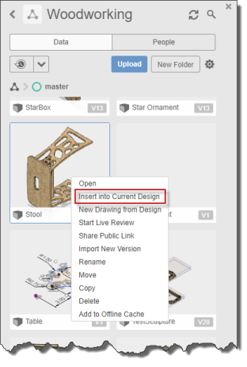
- We now need to reposition each part, so it lies on the X-Y plane. To move the parts, you first need to suppress all joints. You do this by finding the joints in the browser and using the "Suppress" command in the context menu, as shown below. You can select more than one joint at a time and suppress them all simultaneously. If you have subassemblies in the design, you will also need to suppress any joints within the subassemblies too.
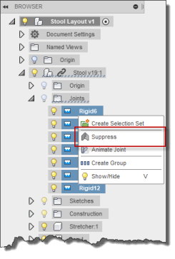
- After suppressing the joints, run the "Capture Position" command, as shown below.
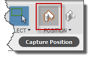
- Create a body that represents the stock board you'll be cutting the parts out of. Do this by creating a new sketch on the base XY construction plane, as shown below.
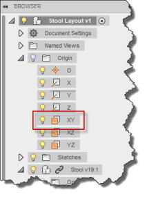
- Draw the shape of your stock. Typically, this will be a rectangle, but it can be any shape if you're using a left-over board. An example sketch is shown below.
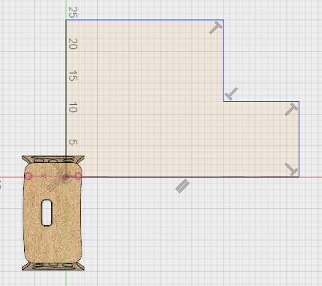
- Extrude the stock the depth of your material so you now have a representation of your stock.
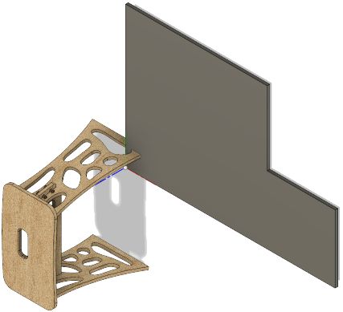
Not it's time to start laying out the parts of your design onto the stock board. This approach uses a planar joint to do that. Steps 9 through 12 detail the process to lay out each piece.
Run the "Joint" command and select the "Planar" type, as shown below.
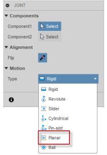
-
For the "Component1" selection, select a face on the part on the "bottom" of the part. In the example below, I'm choosing the top of the seat as the "bottom", because there are some features under the seat that need to be machined. When creating a joint, you can choose from many snap locations on the selected face. The location you choose doesn't matter for this workflow.
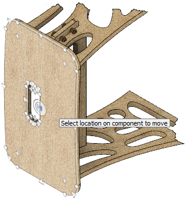
-
For the "Component2" selection, select the face on the top of the stock board. Again, it doesn't matter which location point you choose, but it's typically the easiest to use the one at the center of the board, as illustrated below.
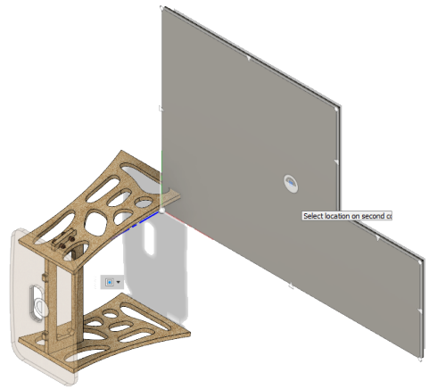
-
After specifying the second component, the board will animate moving over to the stock and demonstrate how it can be repositioned. You can move it in the X and Y directions and rotate it using the widget. Use the widget to position and orient the board where you want it on the stock. You can use the fields in the dialog to specify specific values.
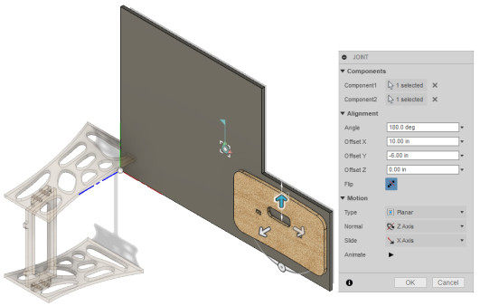
Continue with steps 9 through 12 to layout each board on the stock.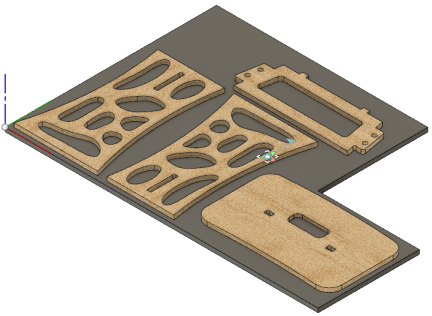
- To edit the position of a board you've already placed on the stock, you can move it around using the mouse, and because of the joint, it will stay positioned on the stock board. You can also edit the joint and change the values in the dialog to modify the rotation or X and Y offsets. To edit the joint, find the joint in the browser and select the "Edit Joint" command in the context menu.
You can now use the "Export to Origin" with the "Solid Bodies Layout" option to export all of the bodies as a single SVG maintaining their relative positions. However, there is a bug in Fusion 360 where the "Export to Origin" command cannot correctly use parts from an external reference. This problem is easy to work around because you can use the "Break Link" command to convert the references to local parts. The "Break Link" command is accessed from the context menu of the referenced component, as shown below. Break the link, run the "Export to Origin" command, and then do an undo operation to undo the broken link and convert it back to an external reference. It's desirable to have it be an external reference because if the original parts and assembly are modified, the changes will automatically be reflected in this layout assembly.